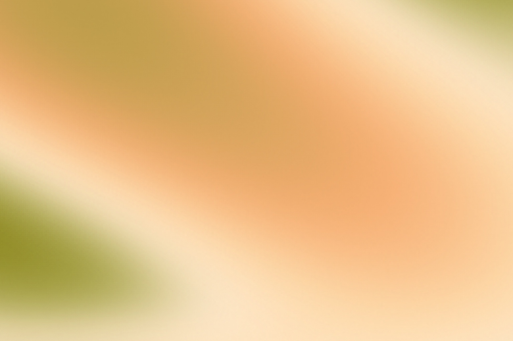

Mesh Gradient Generation / Agent Skill
把渐变效果，变成能重复执行的制作方法。
先说清楚色块在哪里、占多少、边缘如何融合，再让工具把它画出来。连接 Figma 时保留可编辑图层；需要更复杂的流动或显影时，再换合适的渲染方式。
已从历史操作片段找回六张图的原生构建方法，并在原 Figma 文件中只读检查了后续六类制作方式及代表性渲染。原聊天界面仍未恢复。本页明确区分当前观察、历史记录和本次重新整理的方法，不把缺失的讨论过程补写成事实。
Art direction / Usage and color
先决定它服务什么，再决定它有多艳。
一张 PPT 背景需要给标题和图表让路，品牌海报可以把色场本身当成主角。先固定用途、文字位置和裁切，再比较配色。Skill 会让 Agent 在同一构图上给出少量方案，用户选定后才批量延展。
配色比较器：同一构图，只换颜色。
这是本页的选择辅助，不会自动同步到 Figma。选一种关系，再点击色块改颜色；预览始终保留相同位置，便于比较。色板名字是设计方向，不是审美评分。
四个配色样例：先看成图，再决定颜色。
下面与比较器使用相同的四个色池和叠层顺序，只替换颜色角色。每张都附做法；选定后可点“载入比较器”继续改色。
单色层次FFF4E7 · FDDAAA · F6AD71 · B7542E暖杏与桃色负责大色场，右下的深橙只做明暗锚点。适合封面、章节页；中间色接近时需要拉开深浅。
邻近暖色FFF4E7 · E6BE6C · F6AD71 · C97C83保持同样的四个色池，把深橙换成玫瑰、浅杏换成金色。色相更丰富，适合柔和活动视觉；先让一种暖色主导。
杏桃 × 橄榄FFF4E7 · F6AD71 · B59B46 · 898418桃色铺主场，金绿连接，深橄榄放右下。用位置与面积约束撞色，适合品牌主视觉；重叠变灰时先减少绿的范围。
冷中性 + 强调F4F5F3 · D5DEDE · 91A9B4 · 3F708E雾白打底，蓝灰做过渡，深蓝压住右下。适合信息较多的页面；把深蓝移出正文区域后再检查真实文字对比。
这些配色效果是怎样画出来的？
用一张底色，加四个从实色渐隐的椭圆径向色池：主色在 (18%,28%)，辅助色在 (78%,28%)，强调色在 (65%,95%)，辅助色再出现在 (25%,88%)。渐隐终点分别为 60%、62%、50%、60%；第一个色池位于最上层。这组浏览器预设没有额外 blur。
位置与渐隐终点可直接查看或复用 palette_studies.js。SVG 样例与比较器共用这组配方。它们是新的浏览器配色研究，与上面的原生 Figma 作品分别标注；跨软件复现仍需用实际渲染校准渐变和混色。
单色并不等于把同一个颜色反复加白、加黑。先拉开明暗，再控制鲜艳程度。邻近色容易融合，需要保留明暗锚点；撞色用小面积强调，先减少重叠和透明度，避免混脏。已有品牌色应优先保留，不能因为“更好看”就擅自替换。
作为品牌设计师，怎样判断审美？
先看主次：有没有一个主色块、支持色块和安静区域；再看识别：色相偏向、形状走向和边缘节奏能否让多张作品形成一家；最后看克制：每一种纹理、颜色和形变是否都在支持信息。不要把“高级感”当成已经测量的结论，应该说清楚具体改动，并把渐变放回真实内容里比较。
需要更准确地调明暗和鲜艳程度时，可用 OKLCH；它让明度、色度与色相更容易分别控制，但仍需检查实际工具和输出色域。网页普通文字的最低对比通常为 4.5:1，大字为 3:1；应按 WCAG 的适用条件，检查文字下面真正的背景及不同裁切，不是只测几个色板。
把修改收敛为五件事。
用途与留白 → 配色 → 分布 → 融合 → 对比。改色只改命名的颜色 Fill；构图调整移动、缩放、旋转整组色团。返回颜色节点与遮罩节点的对应关系，Agent 后续可以定点修改，不必每次重做整张图。
模糊不是固定的 200 px。先选制作路线：矢量叠面可在 100–200 px 之间比较；需要保留卷曲轮廓时先试较低值。多点遮罩用透明度衰减形成软边。具体换算和实际对照见画幅与模糊。
详细判断、选择流程与来源见 art-direction.md。本包不把上述建议包装成偏好研究结论。
01 / Effect grammar
同一组颜色，可以用不同的方式成形。
以前的试验暴露了一个问题：只取配色，容易丢掉原图的构图；整张图直接模糊，又会留下失焦照片的感觉。可复用的方法是先提取颜色、位置、面积和主要明暗，再决定每一类效果保留多少结构、怎样处理边缘。
原 Figma 导出 · 矩形 + 曲线 / 200 pxSky-inspired · 斜向晨风先放宽幅亮部和橄榄暗部，再用斜向曲面连起来。调整光带高度与倾角，保留一个清楚的明暗方向。
原 Figma 导出 · 光池 + 曲面 / 200 pxDreamlike · 杏桃折光错开杏桃与金绿色光池，用浅色通道串起前后关系。先改焦点间距，再调融合，避免每个色块一样大。
原作的受控变体 · 4 条曲线 + 1 个径向色场 / 100 pxFlower-inspired · 金绿卷瓣让浓橙曲面从左上向内卷，橄榄曲面压住右上和左下，用象牙亮带穿过交界。它依靠不对称叠面成形。
原 Figma 导出 · Flower 的柔散处理 / 200 pxDiffuse · 柔化曲面保留左侧绿色和右侧杏桃的主次，扩大过渡、压低次要起伏。柔和之后仍要保留亮部通道。

原 Figma 导出 · 24 层矢量轮廓Heightmap · 浅色等高光按高度顺序叠放色阶区域，再柔化相邻色带。先调轮廓间距和明暗顺序；原始轮廓生成算法尚未找回。
原 Figma 导出 · 18 组高斯遮罩 / 无额外模糊Multipoint · 橙绿流云先铺大色场，再加中等过渡和少量强调。每组都有颜色层和独立软边遮罩，改色与改形可以分开进行。
这些是既有原创 Figma 研究的实际像素导出，不是原始参考图片。Flower 主样例把同一作品的 5 个图层模糊改为 100 px，其余形状、填充、透明度均保持一致。点击图片查看 1536×1024 全尺寸 JPEG（为网页压缩，保留构图与尺寸）；下方还保留 150 / 200 px 对照。
Flower 还有哪些真实做法？看浅色曲面与多点交融两个版本。
浅色曲面 · 杏瓣映叶3 条曲线 + 3 个径向色场；原作图层模糊 200 px。通过路径切线与叠压关系形成柔软瓣面。多点交融 · 杏叶交叠18 组独立高斯遮罩，无额外图层模糊。适合连续色场；需要鲜明瓣形边界时应回到曲线路线。
Flower-inspired 表示曲面与叠压的视觉方向。两条构建路线能得到不同结果，不能把多点遮罩称为原有曲线路径的精确替代。
浅色瓷感、深色矿物、鲜艳漂移可以作为配色预设。它们不需要变成另一套流程。主要配方见 figma-recipes.md。早期浏览器中的氛围、流体、颜料、笔触、剪影和花瓣研究，作为可选参考保留在 effects.md，不混写成这次六类 Figma 做法。
Size / Ratio / Softness
尺寸变了，先判断是放大，还是换构图。
1200×800 改成 2400×1600，比例相同，可以等比放大图层、色团和模糊值。16:9 改成 9:16，则需要重新摆放主色团与留白；单纯拉伸会改变曲面走向，居中裁切可能把重点裁掉。
同一色板，三种画幅的重排。
下列是本次新增的参数化 SVG 布局研究，不是对上面 Figma 图片的裁切。颜色会跟随配色比较器；每个画幅分别生成色团位置与尺寸。虚线标出计划放标题的区域，仍需放入实际文字检查。
16:9 · 1920×1080留白在左侧；色团向右和下缘偏移。1:1 · 1080×1080留白放左上；色团围住右侧和下方。9:16 · 1080×1920标题移到顶部；主色场与强调色下移。
100、150、200 px：同一张 Flower 的真实 Figma 对照。
三张都是 1536×1024。同一作品的 5 个图层统一改为相应半径，其他参数不动：100 px 保留更多卷面起伏；150 px 继续融合；200 px 更柔散。原作品未被覆盖，临时导出副本已清理。
100 px / 短边的 9.8%卷面轮廓更容易辨认。150 px / 短边的 14.6%曲面与过渡更均衡。200 px / 短边的 19.5%融合更广，形状更弱。
试调公式：blur = b × min(宽,高) ÷ 1024，其中 b 先选 100、150 或 200。不是所有图层都必须使用同一值；上面的统一值只为方便比较。以 1080 短边为例，三个候选约为 105、158、211 px。
Flower 的 100 / 150 / 200 对照已经实际导出检查；其余区间是建议试调起点，不是每一类都做过对照后的最佳值。可复用的尺寸换算、色池配方和代码示例见 palettes-and-layout.md。
02 / Capability before tool name
先确定需要保留什么，再选工具。
Skill 负责告诉 Agent 怎样判断和制作。MCP 是 Agent 操作 Figma 的连接通道，负责读取文件、创建图层和回看结果。安装 Skill 不等于已经接通 Figma，也不等于连接已有写权限。
选 Figma 原生图层。先发现写入工具，再确认目标文件和页面。用独立色团、填充和必要的矢量路径搭建，返回节点 ID，并查看真实渲染。原生径向叠层仍是 mesh 外观的近似。
SVG 导入后能否保留滤镜和编辑结构，需要在接收软件中检查。把 PNG 放进 Figma 只会得到图片图层，不会自动得到可编辑色团。操作细节见 adapters.md。
03 / Repeatable production
每一步都有明确的修改对象。
复刻原图时，关键是把大色场和细节分开。历史六图流程先用可优化的椭圆高斯色团拟合构图，逐步从 16 增到 32 个，再映射为 Figma 原生遮罩与颜色层。随后用实际导出来计算差值，另建 Linear Dodge / Linear Burn 两张位图校准层。色场可编辑，细节层是位图；大幅改色后应关闭或重算，不能声称整张作品完全由矢量构成。
01 — 分析与定义写出配方
确认尺寸、背景、可编辑程度。记录颜色角色、色区位置与面积、主方向、明暗、边缘和 seed。原图同一种颜色分散在两边时，保留为两个区域。
02 — 静态与材质先看构图，再加纹理
先完成底色和大色块，再调融合边缘，最后加入材质。保持 seed 不变，一次针对一个主要问题修改，避免把所有差异归因于 blur。
03 — 回看与交付检查实际像素
看完整构图和局部细节。确认方向、尺寸、透明度、导出效果和真实可编辑范围。只把通过检查的能力写进交付说明。
需要动效时：把静态、显影和时间分开。
progress 决定恢复多少源图信息；time 决定环境的缓慢运动。不要让每个色块明显地移动回照片位置。像素、颗粒和字形可以保持位置，只逐渐携带更多颜色、明暗和结构信息。
终点要按任务选择：完全还原照片，或保留油彩、剪影、花瓣的材质。先用不对称四角测试图检查纹理是否翻转，再讨论转场美感。暂停、反向、减少动态效果都应可用。详见 motion.md；本包未附现成动画引擎。
04 / Install and run
给其他人的入口。
完整目录以 mesh-gradient-generation 为名放入 Agent 的 skills 目录。Codex 常用位置是 ~/.codex/skills/mesh-gradient-generation/。其他 Agent 请按自己的加载方式保留相对目录。
Agent 仓库阅读入口Skill 执行流程Figma 原生构建函数SVG 生成脚本MIT 许可
FOR PEOPLE / 给使用者先看样例，再给任务。
读中英双语 README 的使用者部分：选用途、效果、配色和画幅，按安装说明接通所需工具。下载整个仓库后打开本页，图片与脚本都在同一目录内。
FOR AGENTS / 给 Agent按入口和任务读。
直接操作仓库的 Agent 先看 AGENTS.md，再读 SKILL.md。通过 Skill 加载器调用时，通常直接加载 SKILL.md；随后只读取当前任务需要的配方、配色布局或工具说明。
给 Agent 的完整任务示例
使用 mesh-gradient-generation，根据我提供的参考图制作 1200×800 渐变。
先分析色区的位置、面积、主方向和明暗，选择合适的效果配方。
优先在我指定的 Figma 文件中创建可编辑图层。
先检查连接是否支持画布写入；若不支持，说明缺少什么，并给出 SVG 路线。
回看实际渲染后修正主要差异，返回节点链接、可调参数和实现限制。
没有 Figma 连接，也能跑静态示意
python3 scripts/render_svg.py --effect atmospheric --seed 17 --width 1200 --height 800 --output study.svg
Python 3 标准库即可，无网络依赖。已有同名输出时默认拒绝覆盖。原生 Figma 脚本是供连接工具内联执行的函数库，不是双击即可运行的插件。
05 / Evidence and limits
把学到的、实现的和仍需验证的说清楚。
来自已读资料：原 Figma 文件的 Sky、Dreamlike、Flower、扩散、Heightmap、多点色团结构；恢复的历史拟合与位图校准记录；以及早期浏览器的同色多区域、三级笔触、剪影花瓣、显影分段与坐标翻转问题。这些来自历史规格和浏览器原型说明；其中的历史测量结果未在本次重新运行，不作为本包的性能或质量承诺。
本次重新归纳：参考分析 → 统一配方 → 按能力选择工具 → 先静态后动效 → 像素与结构回看；另把原图拟合与原创构图区分开，保留“原生色场＋可关闭位图细节”的真实边界。去掉私人路径、固定项目要求和过时的“必须全部回到照片”等约束；为不同工具补充真实可编辑范围。
本次提供：英文 Agent Skill、六种 Figma 配方、用途与品牌审美指南、配色比较器、原生高斯遮罩色团函数、四类 SVG 生成器，以及实际 Figma 效果样例、三档原生模糊对照、四种配色 SVG 与三种画幅的重排研究。未复制整个私人 Figma 文件或原始参考图。
验证状态：已通过 Skill 结构校验、四类 SVG 的确定性与合法性检查、覆盖保护检查、原生函数模拟环境中的遮罩与旋转检查，以及桌面/手机页面和配色交互检查。已核对既有 Figma 结构，导出六类实际样例，并在临时副本上完成 Flower 三档模糊对照；原作未改。新增布局函数与桌面/手机显示已检查。未在真实 Figma 中执行本包构建函数，未完成跨编辑器滤镜验收或用户视觉评审。
原始资料：用户原图、旧会话和已有项目均保留原位。公开仓库包含通用方法、原创代码与既有原创 Figma 研究的渲染样例；不附用户上传的原始参考图片、私人文件链接和会话摘录。
直接技术来源与核对日期
以下官方资料于 2026-10-24 核对。连接能力和软件行为可能继续变化，实际操作以当前工具文档为准。